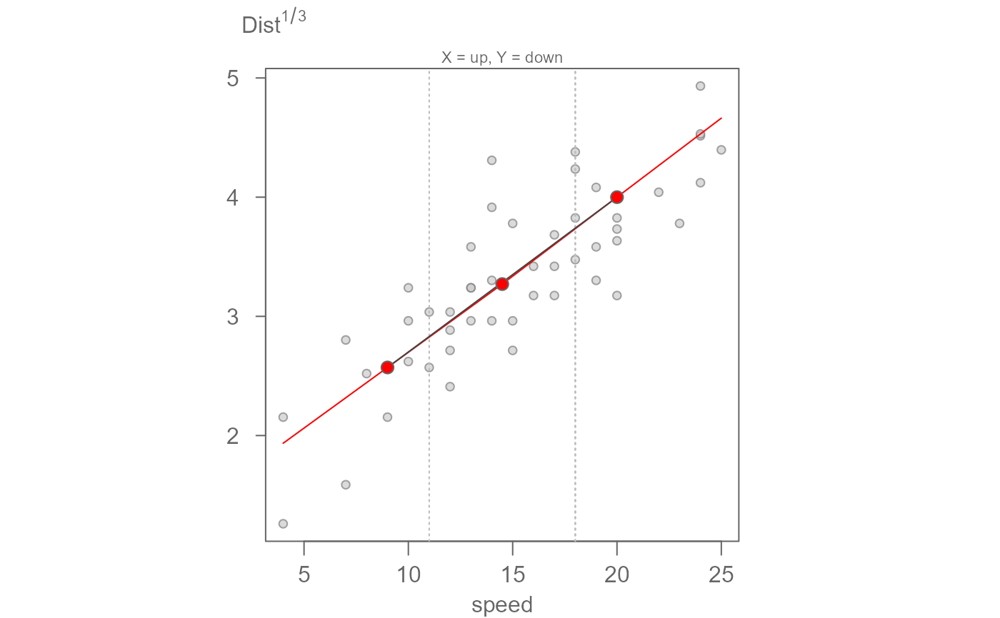
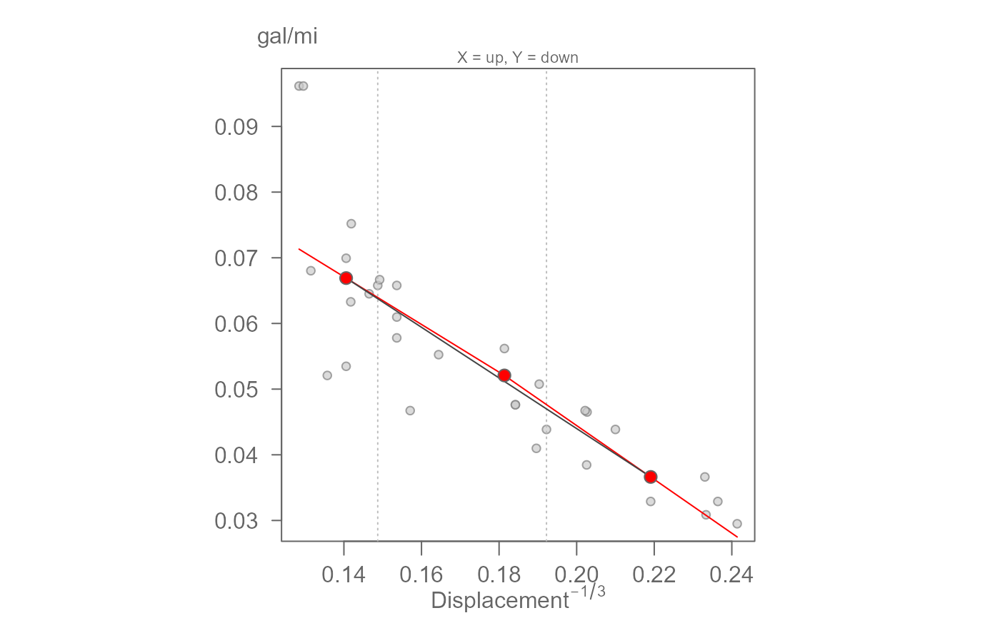
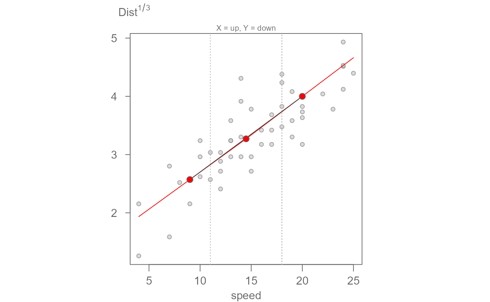
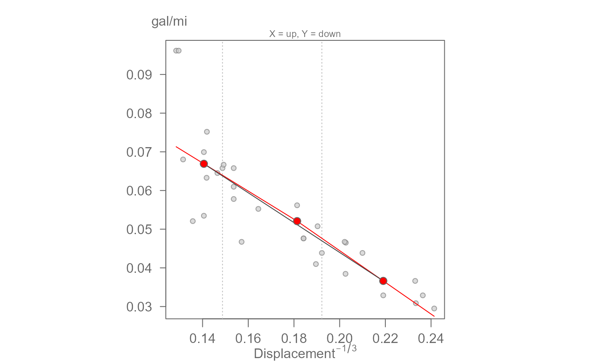

eda_3pt splits the data into 3 groups (whose summary
locations are defined by their respective medians), and two half slopes
linking the groups. The function will return a scatter plot showing the
half-slopes in red solid lines. The solid grey slope linking both tail-end
groups shows the desired shape for both half-slopes. The goal is to have the
two halve slopes line up as closely as possible to the solid grey slope via
re-expression techniques when seeking a linear relationship between both
variables.
The function will also return the half-slopes ratio hsrtio and the
direction of re-expression for both X and Y values on the ladder of powers.
Usage
eda_3pt(
dat,
x,
y,
px = 1,
py = 1,
tukey = TRUE,
axes = TRUE,
pch = 21,
equal = TRUE,
p.col = "grey50",
p.fill = "grey80",
size = 0.8,
alpha = 0.7,
xlab = NULL,
ylab = NULL,
dir = TRUE,
grey = 0.6,
...
)Arguments
- dat
Dataframe.
- x
Variable assigned the x axis.
- y
Variable assigned the y axis.
- px
Power transformation to apply to the x-variable.
- py
Power transformation to apply to the y-variable.
- tukey
Boolean determining if a Tukey transformation should be adopted (FALSE adopts a Box-Cox transformation).
- axes
Boolean determining if axes are to be drawn.
- pch
Point symbol type.
- equal
Boolean determining if axes lengths should match (i.e. square plot).
- p.col
Color for point symbol.
- p.fill
Point fill color passed to
bg(Only used forpchranging from 21-25).- size
Point size (0-1).
- alpha
Point transparency (0 = transparent, 1 = opaque). Only applicable if
rgb()is not used to define point colors.- xlab
X label for output plot.
- ylab
Y label for output plot.
- dir
Boolean indicating if suggested ladder of power direction should be displayed.
- grey
Grey level to apply to plot elements (0 to 1 with 1 = black).
- ...
Other parameters passed to the graphics::plot function.
Value
Generates a plot and returns a list with the following named components:
hsrtio: The ratio between both slopes. A value close to one suggests that no transformation is needed.xmed: The x-coordinate values for the three summary points.ymed: The y-coordinate values for the three summary points.
References
Velleman, P. F., and D. C. Hoaglin. 1981. Applications, Basics and Computing of Exploratory Data Analysis. Boston: Duxbury Press.
D. C. Hoaglin, F. Mosteller, and J. W. Tukey. 1983. Understanding Robust and Exploratory Data Analysis. Wiley.
Tukey, John W. 1977. Exploratory Data Analysis. Addison-Wesley.
Examples
hsratio <- eda_3pt(cars, speed, dist)
 hsratio <- eda_3pt(cars, speed, dist, py = 1/3, ylab=expression("Dist"^{1/3}))

#' # This next example models gas consumption as a function of engine displacement.
# It applies a transformation to both variables via the px and py arguments.
eda_3pt(mtcars, disp, mpg, px = -1/3, py = -1,
ylab = "gal/mi", xlab = expression("Displacement"^{-1/3}))

#> $slope1
#> [1] -0.3633401
#>
#> $slope2
#> [1] -0.4098173
#>
#> $hsrtio
#> [1] 1.127916
#>
#> $xmed
#> [1] 0.1405721 0.1813741 0.2190819
#>
#> $ymed
#> [1] 0.06690834 0.05208333 0.03663004
#>
hsratio <- eda_3pt(cars, speed, dist, py = 1/3, ylab=expression("Dist"^{1/3}))

#' # This next example models gas consumption as a function of engine displacement.
# It applies a transformation to both variables via the px and py arguments.
eda_3pt(mtcars, disp, mpg, px = -1/3, py = -1,
ylab = "gal/mi", xlab = expression("Displacement"^{-1/3}))

#> $slope1
#> [1] -0.3633401
#>
#> $slope2
#> [1] -0.4098173
#>
#> $hsrtio
#> [1] 1.127916
#>
#> $xmed
#> [1] 0.1405721 0.1813741 0.2190819
#>
#> $ymed
#> [1] 0.06690834 0.05208333 0.03663004
#>